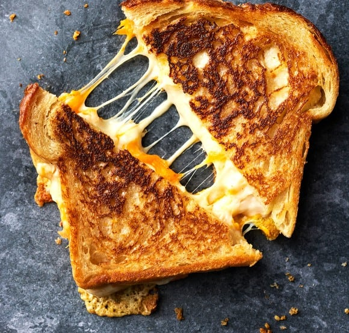

Grilled Cheese

Ingredients
- 2 slices sourdough bread
- Mayonnaise
- 1 to 2 ounces sharp cheddar cheese
- 1 tablespoon of butter for pan
Steps
- Heat pan to medium-low
- Spread mayo on one side of bread
- Put bread mayo side down on skillet. Top with cheese
- After 3-4 minutes flip one slice of bread onto the other and remove from skillet.